0. Quick Orientation
What is this editor?
The Event Flow editor is the “advanced automation” layer for Social Stream Ninja. It sits above the simple popup switches and lets you script your own routing logic. Use it when you need to:
- Relay chat between services with filters (e.g., mirror Twitch to Discord but block commands).
- Build loyalty-based commands, keyword games, or raffle gating with AND/OR/NOT logic.
- Trigger custom overlays, audio, OBS scenes, or webhooks based on data you enrich in the flow.
- Mix multiple platforms inside a single automation (Kick + Twitch + YouTube routed through one flow).
Think of the popup as “quick presets” and Event Flow as the toolkit for bespoke workflows.
Launch + Basics
- Open the Event Flow editor from the main dashboard's menu (desktop or extension).
- Every project is saved locally until exported. Use
Exportto back up or share. - Work inside canvases called flows. Each flow can subscribe to multiple platforms at once.
Nodes at a Glance
- Inputs (left ports) expect the message context.
- Outputs (right ports) emit the same context plus any edits.
- Logic nodes may emit both the
truechannel and an optionalfalsechannel.
Payload Structure
Every message carries a JSON object. Mandatory keys follow docs/event-reference.html (platform, type, chatname, chatmessage, etc.). Attach custom data under meta.
Every flow starts with a trigger
Action nodes (green) never run on their own. They only fire when a trigger node (blue) above them evaluates true. A flow built only from actions chained together looks valid but is permanently idle, because nothing ever starts the chain. Node names describe what the node does, not when it happens: Feature Message features a message when the flow reaches it. It does not fire when you feature a message elsewhere.
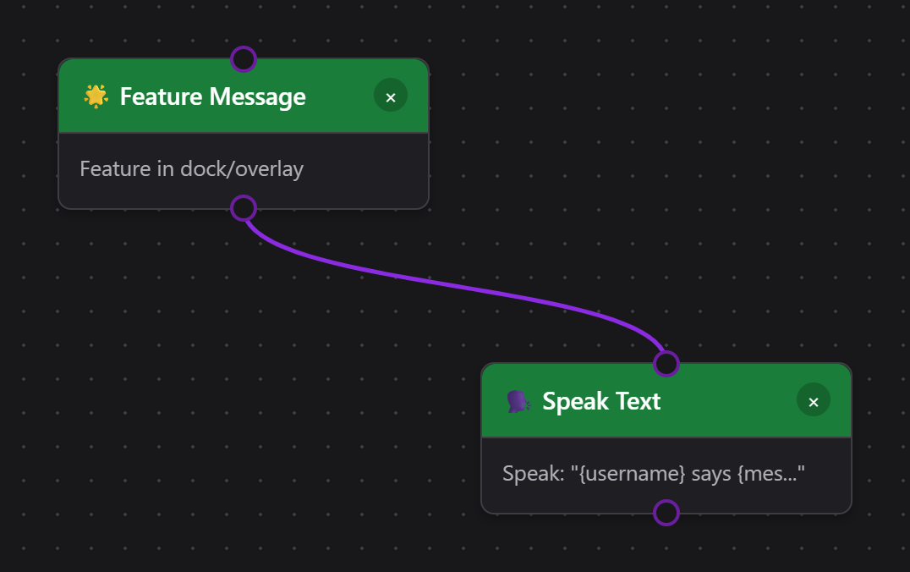
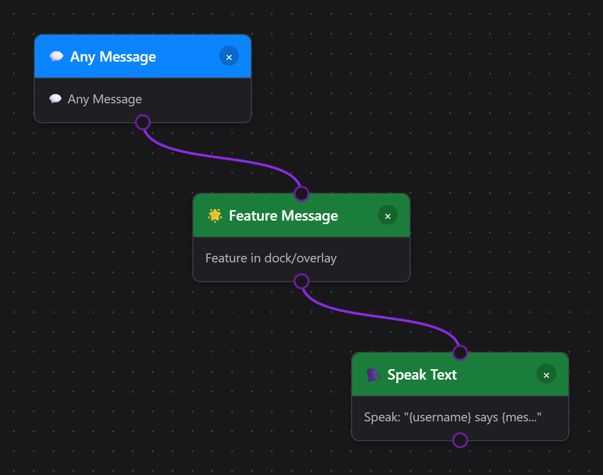
Flow Actions Overlay (Action Output)
Valige Donation: celebration + voice for a ready-made animation and synthetic thank-you clip, or the advanced Donation: animation + sound + OBS filter template. New alert templates start disabled so you can configure and test them first. For the OBS template, choose a source and the same normally-off filter in both filter actions.
Valige Play Audio Clip → Browse sounds to search original effects and prerecorded synthetic phrases in English, Spanish, and Brazilian Portuguese. Filter by category, event, language, delivery, or duration; save favorites and preview locally before choosing Use sound. The Sound Library also opens on its own and provides sound URLs for custom overlays. Multi-Alerts uses the same browser.
In Event Flow, use the plus buttons to build a random set of two to twenty sounds, then choose Use random set. Each trigger plays one selected sound. Choosing a single sound or entering another audio URL replaces the set. Playback options controls overlap, queueing, and the action's cooldown; Stop Audio Clips stops Flow Actions clips and clears its queue. Place a Rate Limiter before any Spend Points action when limiting paid commands. Audio playback does not automatically refund a separate points charge. You can still upload a recording or choose an app-local file. For changing names or messages, use Rääkige tekst.
Event Flow plays through the Flow Actions browser source; Multi-Alerts plays through its own browser source. Keep sound enabled in only one for the same event to avoid duplicate playback. Tab to a flow node and press Enter or Space to edit its properties.
Nodes such as Play Audio Clip, Display Media Overlay, and the OBS controls need a rendering surface. That surface is the Flow Actions overlay page served from actions.html. Keep it running in your broadcasting software (OBS/Streamer.bot browser docks/etc.) so Event Flow actions have somewhere to appear.
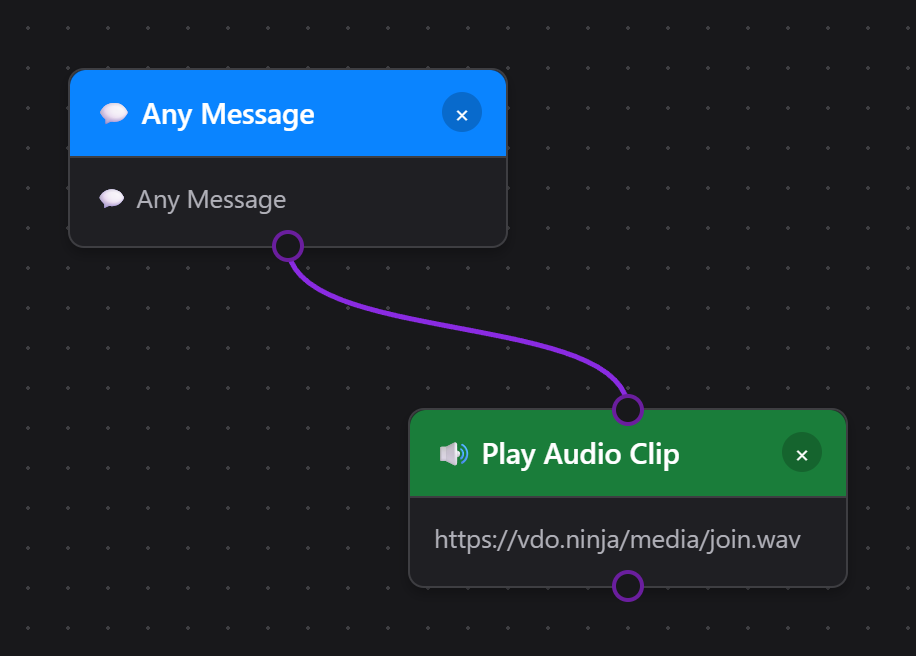
- Open the main Social Stream Ninja popup (the window loaded from popup.html or the extension icon).
- Scroll to the “Flow Actions” card. Use the [copy link] button or click the URL inside the card.
- The link looks like
https://socialstream.ninja/actions.html?session=YOURSESSION. Paste it into an OBS Browser Source (1920×1080 suggested) or open it in any overlay browser.
- In a Play Audio Clip or Display Media Overlay action, click Choose Local File.
- Klõpsake Copy Local Flow Actions URL for OBS and use that generated localhost URL instead of the hosted Flow Actions URL.
- Keep SSApp running. If a selected file moves, return to the action and click Relink.
The Chrome extension cannot serve disk files by itself. Use Upload or a hosted URL when no desktop companion is available. See the Media Files for Event Flow guide for the full setup.
Once loaded, that overlay can:
- Show GIPHY or direct media URLs, text, and confetti triggered by your flows.
- Play sounds (TTS, audio clips) locally so viewers hear them.
- Talk to OBS via the WebSocket settings that live under the Flow Actions section in the popup (scene switching, source toggles, GDI+/FreeType text updates, replay buffer, etc.).
- Browser Source API: available only when
actions.htmlis running inside OBS Browser Source with Advanced Access Level. Scene switching works here, and recording / streaming / replay buffer actions can fall back to it. - OBS WebSocket: recommended for consistent control. Social Stream Ninja Flow Actions use the OBS WebSocket v5 API from OBS 28+ and expect the modern request set on port
4455. - Password: optional. Only append
&obspw=...to the Flow Actions URL if your OBS server is configured to require authentication. - Overlay diagnostics: append
&obsdebug=1to the URL foractions.htmlif you want a small live OBS connection badge on the overlay while troubleshooting. - Set Text Source: updates OBS Text (GDI+) and Text (FreeType 2) inputs directly and supports Event Flow template variables such as
{counterValue}ja{counterTarget}. - Old 4.x installs: if you are still using obs-websocket 4.x / port
4444, source / filter / mute / text actions will not work until OBS / obs-websocket is upgraded.
See the dedicated OBS Control Guide for every trigger, action, setup step, and tested recipe.
- Avatud obs-websocket-test.html.
- Confirm
GetVersion,GetCurrentProgramScene, jaGetSceneListsucceed. - Run the matching action check there before testing the full Event Flow automation.
1. What Moves Through a Node?
The Event Flow runtime passes two things through every wire:
- Payload – the event or message data object.
- Gate signal – a true/false bit telling the next node whether to run.
false socket on a Condition node). That makes it easy to build fallback logic without duplicating whole flows.
Input Expectations
- Event Sources (Twitch Message, Timers, Manual Trigger, etc.) ignore upstream input. They generate their own payload and always emit
trueunless the node itself errors. - Transform & Logic Nodes read the payload and may rewrite fields, set state, or flip the gate signal to
false. - Action Nodes fire only when the gate remains
true. They can still output an updated payload if you want to keep chaining actions.
Output Patterns
Single Output
Most nodes expose one output. Whatever enters (payload + gate) exits unchanged unless the node edits it.
True/False Outputs
Condition, Compare, Regex, and Logic nodes emit two ports. True continues through the green port; false becomes available on the gray/red port.
Pass-Through vs. Override
Some nodes (Set Variable, Math, Text Replace) mutate the payload but still forward the true/false state from their input. Others (NOT, AND, OR) recalculate the boolean themselves.
2. Logic Node Cheatsheet
These blocks answer the most common "What does true/false mean?" questions.
NOT
- Inputs: 1 boolean (true/false) derived from the previous node.
- Outputs: the inverted boolean plus the untouched payload.
- Default behavior: If nothing is connected to the NOT input it evaluates to
false, so the output istrue.
AND
- Inputs: two or more boolean signals (A, B, ...). You can leave extra ports empty.
- Outputs:
trueonly if all connected inputs equaltrue. - Use AND when multiple conditions must be satisfied simultaneously ("is subscriber" ja "chat message contains !raffle").
OR
- Emits
trueif any connected input is true. - Great for multi-platform triggers: feed Twitch + YouTube message nodes into a single OR, then unify the downstream action.
No. Many nodes already provide all-in-one filters (for example "Filter User Level" + "Contains Text"). Use AND only when the built-in options do not cover your combination, or when you want a reusable logic junction that other branches can share.
true. Keep it wired to something meaningful or disable the node so it does not accidentally unblock a flow.
3. Example Micro-Flows
A. Auto-reply Unless the Message Is a Command
Here the Regex node emits true when the message is a command. We route the false socket to our reply, so regular chatters get an acknowledgement while commands simply pass through.
B. Require Multiple Checks with AND
The AND node ensures only members using the right keyword relay to Discord. Both branches send their boolean result to the AND node; the payload from the first branch continues downstream.
C. NOT Node to Block Repeat Alerts
State Check outputs a value of true when the alert is muted. By inverting that result, the NOT node makes sure we only play the celebration when the flag is false.
D. Randomly Play One of Two Sounds
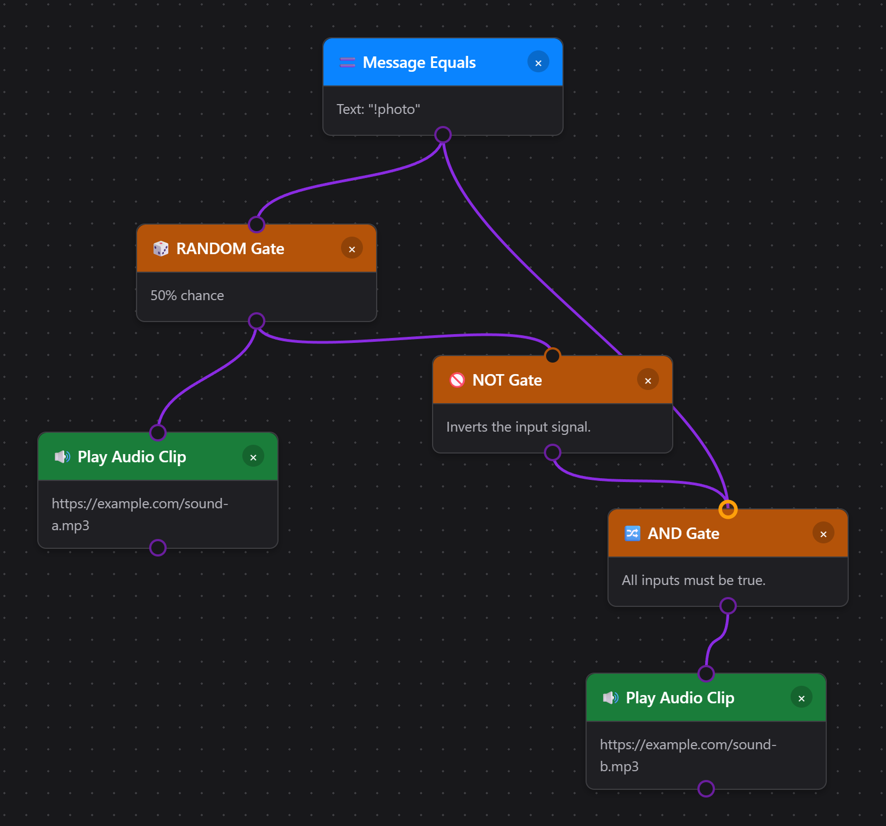
The AND gate is not optional. A bare NOT would output true whenever the RANDOM gate sits idle, so sound B would play on every chat message that doesn't match your trigger. Feeding the trigger into the AND as a second input restricts sound B to matching messages only. The same pattern works for any either/or pair of actions, not just audio.
4. Preventing Echoes, Loops, and Relay Feedback
Relaying chat between surfaces is powerful but can echo infinitely if you listen to your own output. Follow these safeguards:
Incoming triggers and outgoing Relay Chat destinations both distinguish between
youtube ja youtubeshorts. Use two relay actions when a message should reach both variants. See YouTube Shorts ja Event Flow.
A reflection is an outgoing message captured again from a destination chat. Current Relay Chat actions skip these recognized reflections; there is no separate No Reflections checkbox. To hide or limit their display in the Dock and overlays, use a Reflection Filter action with Block All, Allow First, või Allow All. This controls display on re-ingest, not sending. Follow the Twitch and YouTube relay walkthrough for a complete setup.
- Avoid duplicate relay systems. Disable global Relay all when using equivalent Event Flow routes, and check for other services bridging the same chats. Custom metadata is not guaranteed to survive a trip through a platform chat.
- Use Debounce or Cooldown nodes for alerts that should only fire once every X seconds.
- Break cycles intentionally. If two branches feed each other, add a logic node that checks a state variable ("currentlyRelaying") so the flow exits early when the flag is set.
5. Inputs, Outputs, and Practical Questions
What comes into a node?
- The full message payload.
- The gate bit (
true/false). - Optional context (state variables, timers) that the node asks for explicitly.
What leaves a node?
- The same payload unless the node edits it.
- A recalculated gate bit (logic nodes) or passthrough bit (actions).
- Most side effects (like sending chat) do not alter the payload, but points actions can attach status fields such as
pointsTotalvõipointsSpendErrorfor downstream logic.
When to branch?
Whenever you want to react differently to true vs false. Drag a wire from the colored output you need (green = true, gray/red = false) to the next node.
false output, the flow simply ends there. That is perfect for filters ("block everything that fails the check") but do not forget to connect the false path if you need fallbacks.
Common Q & A
- Do I have to use AND for every pair of filters? No. Many nodes include multiple checks (for example, the basic Message Filter supports keyword + role). Use AND only for advanced combinations or when merging signals from different nodes.
- How do true/false values reach the NOT node? Any node with a green output emits
trueby default. When a condition fails, it emitsfalse. Connect that wire into NOT to invert the result. - Can a node emit a payload even if it returns false? Yes. The payload still travels through the false output; it is up to you to decide where that branch should go.
- How do I match TikTok Team members? Valige TikTok Team Member in the User Role node. It recognizes TikTok Fan Club/team levels and badges on the incoming message and does not depend on Main Chat Overlay settings.
- How do I limit TikTok TTS to Team level 10 or higher? Valige Compare Property → TikTok Team Level, Greater or equal (>=), ja 10. Connect this and a From Source → TikTok condition to an AND node, then connect AND to Rääkige tekst. This reads
meta.teamMemberLevel, which native TikTok connectors and Standard capture supply when numeric Fan Club data is available. Image-only badges cannot provide an exact level; messages without the field do not match. Use Test Flow → TikTok Team Level to try levels below and above your minimum. Disable any separate automatic TTS if this flow should be the only reader. - Can each Speak Text node use a different voice? Yes. Enter a provider-supported voice name or ID in Voice Override, or leave it blank to use the Flow Actions TTS default.
6. Template Variables Reference
Several action nodes (Show Text, Set Text Source, Send Message, Relay Chat, TTS Speak, Call Webhook, Print Thermal Label) support template variables that get replaced with event data at runtime. Wrap variable names in curly braces like {username}.
Core Variables (backward compatible)
| Variable | Alias | Description | Näide |
|---|---|---|---|
{username} | {chatname} | Display name of the user | CoolViewer123 |
{message} | {chatmessage} | Chat message text | Hello everyone! |
{source} | - | Platform name (capitalized) | Twitch, YouTube |
{type} | - | Platform name (raw) | twitch, youtube |
{donation} | {hasDonation} | Donation/tip display label | $5.00, 500 bits |
Extended Variables
| Variable | Description | Näide |
|---|---|---|
{displayname} | Display name (alternate field) | CoolViewer123 |
{donoValue} | USD donation equivalent, supplied or estimated; Event Flow derives threshold values from normalized hasDonation labels such as value, $value, value + unit, or compact unit/value. Unknown named virtual units use 100 units = $0.01 USD; unpriced TikTok gifts use one coin per gift ($0.01 each). {donationAmount} is a legacy alias | 5.00 |
{event} | Event type identifier | cheer, raid, new_follower |
{membership} | Membership state | MEMBERSHIP, new_sponsor |
{subtitle} | Additional context | Member for 3 months |
{userid} | User's platform ID | 12345678 |
{chatimg} | User avatar URL | https://... |
{contentimg} | Attached image URL | https://... |
{rewardTitle} | Reward name when the source exposes a top-level reward title field | Highlight My Message |
{meta} | Structured event data (JSON) | {"viewers":100} |
{counterValue} | Current counter value after a Counter or Check Counter step | 12 |
{counterTarget} | Counter target value | 30 |
{counterRemaining} | Counter target minus current value, clamped at 0 | 18 |
{USERNAME}, {Username}, ja {username} all work the same way.
Check Counter exposes {counterValue}, {counterTarget}, ja {counterRemaining}.
Example Templates
- Show Text:
{username} just cheered {hasDonation}! - Set OBS Text Source:
{username}: now {counterValue}, need {counterTarget} - Relay Chat:
[{source}] {username}: {message} - TTS:
{username} says {message} - Donation Alert:
{username} donated {donation} - {subtitle} - Thermal Label:
{username}, a new line, then{donation}. Vaata Thermal Printer Guide for printer setup, fixed-size labels, and a complete flow. - Discord Call Webhook:
{"content":"{message}","username":"{username}","avatar_url":"{chatimg}"}
{donation} on a regular chat message), the placeholder is replaced with an empty string rather than showing the literal {donation} text.
7. Best Practices Checklist
- Name & color your nodes so future-you knows which branch is which.
- Test with the built-in simulator (Send Test Event) before pushing a flow live.
- Group logic near the source. Filter as early as possible to avoid extra processing down the line.
- Store repeats in State nodes. Use counters, toggles, and timestamps to avoid double alerts.
- Document meta fields. When you add custom
metakeys, note them so overlays and remote clients stay consistent.
8. Further Exploration
Run custom workflows from Stream Deck or the API: named triggers, a starter template, workflow discovery, extra data, HTTP/WebSocket/P2P examples, and dial gestures.
Ready for more depth?
- Kasuta State Nodes (counters, toggles, timers) to track context between events.
- Combine Variables + Logic to build queue systems, raffles, or scoring engines.
- Hook into the Points & Rewards system so viewers can intentionally trigger flows.
- Running the SSApp desktop app? Unlock Custom JavaScript nodes for arbitrary logic that no built-in node covers.
- Check the Sündmuste teatmik for detailed payload documentation across all platforms.
This guide is intentionally standalone. Copy it locally, adapt it for your team, and keep experimenting inside the editor.
9. Custom JavaScript SSApp / Desktop only
Two nodes in the Event Flow editor let you write arbitrary JavaScript that runs inside the flow pipeline: Custom Code (trigger) and Execute Custom Code (action). They are the escape hatch for anything the built-in nodes cannot express.
new Function() / eval(). Open the editor through the SSApp desktop app to enable them. In extension mode the nodes appear greyed-out with the label "Desktop only".
Ctrl+S või Cmd+S does the same. Cancel leaves the node unchanged.
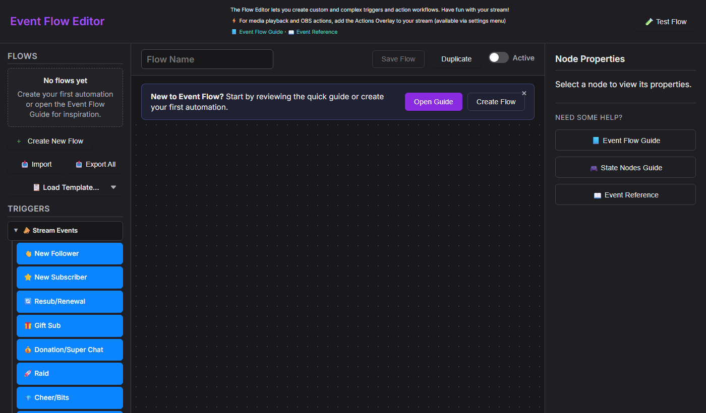
Custom Code: Trigger node
Drag Custom Code from the Advanced group in the Triggers panel onto the canvas. It acts as a gate: the flow continues only when your code returns true.
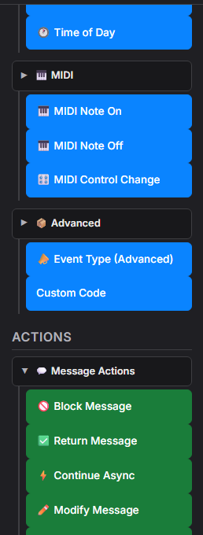
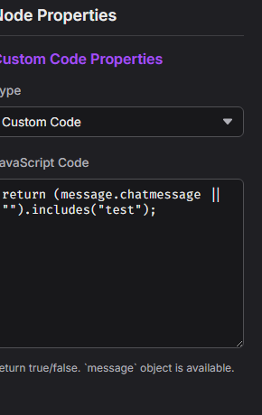
true või false.function(message) { ... }Must return: a boolean:
true to let the flow continue, false to stop it.Available: the object
message (see message API below), plus convertCurrency(value, targetCurrency, source) ja convertToUSD(value, source).
Execute Custom Code: Action node
Drag Execute Custom Code from the Integrations group in the Actions panel. It can mutate the message, block it, or attach metadata that downstream nodes can read.
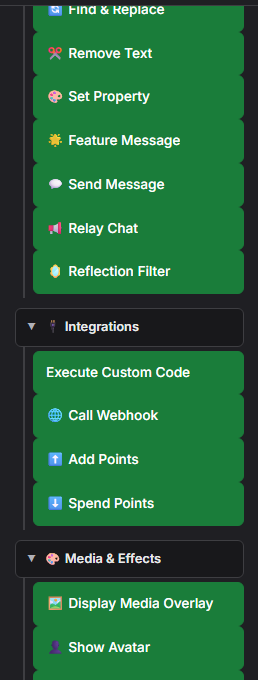
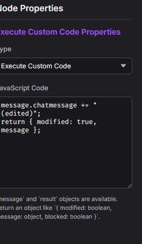
function(message, result) { ... }Should return: an object or Promise merged into
result; see result API.Available:
message (the event payload), result (current flow result state), printThermal(html, options), plus convertCurrency(value, targetCurrency, source) ja convertToUSD(value, source).
printThermal('<strong>' + message.chatname + '</strong>'). SSApp queues the job silently through the native Windows printer API and uses those saved settings. A flow can override them with options such as { width: '58mm', marginLeft: '3mm', marginRight: '3mm', marginTop: '2mm', marginBottom: '2mm', feed: '3mm', marginType: 'printableArea' }. Returning the Promise lets Event Flow wait for submission and report errors.
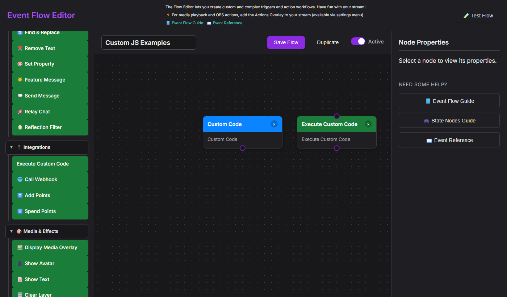
The object message
Both nodes receive the full event payload as message. The fields below are always available; platform-specific events may include additional ones.
| Field | Data type | Description | Näide |
|---|---|---|---|
message.chatmessage | string | The chat message text (may contain HTML) | "Hello stream!" |
message.chatname | string | Display name of the sender | "CoolViewer" |
message.userid | string | Platform user ID | "12345678" |
message.type | string | Source platform (lowercase) | "twitch", "youtube", "kick" |
message.hasDonation | string | Formatted donation string if present | "$5.00", "500 bits" |
message.donoValue | number / string | USD donation equivalent when the source provides one; valid zero values are honored. Event Flow falls back to currency.js conversion of normalized hasDonation labels for threshold comparisons, including 100 unknown named units = $0.01 USD. It does not parse chatmessage prose for donation values. | 5 |
message.event | string | Event type identifier | "new_follower", "cheer", "raid" |
message.membership | string | Membership state when applicable | "MEMBERSHIP" |
message.subtitle | string | Secondary context line | "Member for 3 months" |
message.mod | boolean | Sender is a moderator | true |
message.subscriber | boolean | Sender is a subscriber | true |
message.vip | boolean | Sender has VIP status | true |
message.chatimg | string | User avatar URL | "https://..." |
message.meta | object | Arbitrary structured data attached to the event | { viewers: 120 } |
convertCurrency(message.hasDonation, 'EUR', message.type) to convert the formatted donation label into EUR. It returns a number, or null when the requested target currency is unsupported. The converter uses Social Stream Ninja's approximate internal rates; it does not contact an external exchange service.
What the action returns
Return a plain object from your action code. Any fields you include are merged into the flow's result object; fields you omit keep their current values.
| Return field | Data type | Effect |
|---|---|---|
modified | boolean | Määra true if you changed message fields. Tells downstream nodes the payload has been edited. |
message | object | Pass the (possibly mutated) message back so downstream nodes receive your changes. |
blocked | boolean | Määra true to prevent the message from being displayed or relayed. |
return { modified: false, message };Even if you didn't change anything, returning
message keeps it flowing to the next node.
Snippet examples
Copy any of these into the JavaScript Code textarea of the matching node type.
Trigger snippets: return true to continue the flow
!queue, !raffle, !enter).Action snippets: return { modified, message }
{meta}).Complete example: VIP feature request bot
This flow listens for !feature <text> from subscribers, VIPs, or mods, reformats it as a feature request, and relays it to a second destination (e.g. Discord).
Step 1: Custom Code trigger (paste into the trigger's JavaScript Code field):
Step 2: Execute Custom Code action (paste into the action's JavaScript Code field):
Step 3: Relay Chat action: add a standard Relay Chat node after the action and configure it to point at your Discord (or other) destination. No custom code is needed here. The reformatted message.chatmessage flows through automatically.
!feature dark mode support, and confirm the Relay Chat destination receives the reformatted string.
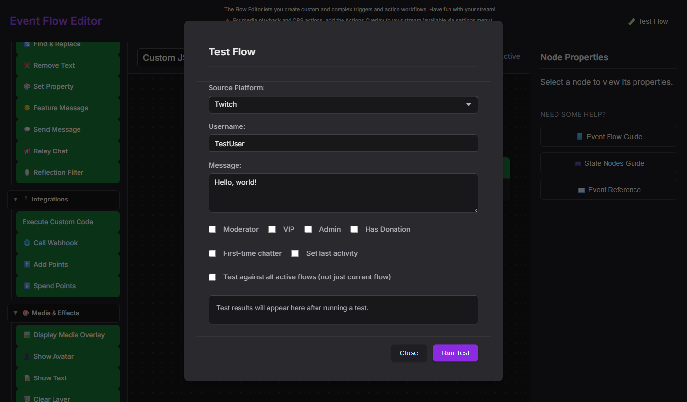
Security considerations
window object and any APIs the preload script exposes (e.g. window.ninjafy). Treat imported flow files like executable code. Only import flows from sources you trust.
- No network sandbox. Action code can call
fetch(). If you're accepting shared flows from others, audit the JS before activating them. - Errors are caught. A runtime error in your code returns
false(trigger) or a no-op (action) and logs to the DevTools console. The flow doesn't crash. - Syntax errors too. An error of type
SyntaxErrorat compile time is caught the same way. Check DevTools (F12) if a node appears to do nothing.